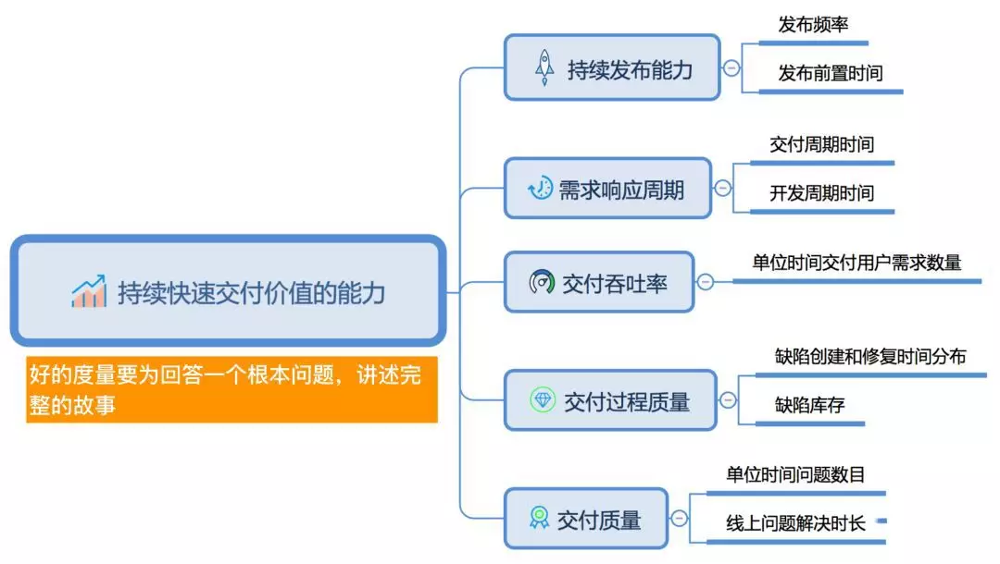
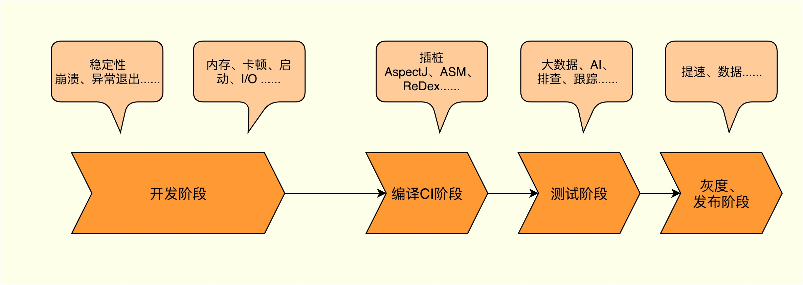

通过“高质量开发”模块的学习，相信你已经对打造一款高质量应用信心满满了。不过人们常说“提质增效”，总喜欢把质量和效率联系在一起，我们都希望在保证质量的前提下，为自己的团队提速。
特别是移动互联网在红海厮杀的今天，快速试错变得越来越重要，敏捷开发也被越来越多的团队所推崇。有些时候为了效率我们甚至愿意牺牲部分性能，而选择在合适的时间去偿还这些“债务”。
在“高质量开发”模块中，我侧重如何给应用交付的每个步骤做好“质检”。今天我们就一起来开启新的征程，从组织和个人研发效能的角度，重新帮你审视整个应用交付的过程。
组织的研发效能
1. 何为研发效能
在讨论如何优化组织研发效能之前，请你先思考一下什么是研发效能。
我们平常开发的过程，是从产品的一个需求想法，转变为功能并且发布上线。这个过程会涉及产品、设计、开发、测试，更多的时候可能还会拉上前端、后台或者算法。
产品的交付涉及很多的流程和人员，虽然设计人员出图很快、我们开发效率很高，但也并不能代表研发效能同样很高，研发效能是对整个产品最终交付的速度和质量负责。在《如何衡量研发效能》一文中，将研发效能定义为一个组织持续快速交付价值的能力。
在文中，作者从流动效率、资源效率和质量进一步拆解了研发效能，并提出了研发效能的五个衡量标准。

对于客户端研发来说，我们是不是只要保证按时按质实现需求就可以了呢？有很多公司，尽管实行“996”，产品、开发和测试看起来的确都很忙了，但是交付速度和质量却仍然不令人满意：产品埋怨开发效率低、开发埋怨产品需求不明确、测试埋怨开发质量差、开发埋怨测试发现不了问题等。
这是因为什么呢？对于研发效能这个话题，虽然我并不是这个领域的专家，但根据我多年的工作经验，我可以谈谈个人的两点思考：
-
提效是每个人的职责。尽管在 BAT 这些大厂，会有专门的研发效能部门，但是效能的提升并不是单单只依靠效能部门，或者认为是领导的事情，而是组织里面每一个人都应该去思考的事情。例如天猫设立的效能目标是“211”，也就是 2 周交付周期、1 周开发周期以及 1 小时发布时长。那团队中的每一个人都应该为这一共同目标而努力，回顾在每个发布迭代中遇到的问题以及改进的建议。
-
提效不仅限于写 Android 代码。尽管我们是 Android 开发工程师，但是我们的工作不应该局限在写 Android 代码上，关键还是解决需求场景。无论是 APM 系统、大网络平台、大数据平台，这种大型的前后端一体化解决方案，还是需求流程上或者增强产研测沟通信任的优化。只要是对提升效能有帮助的，我们都可以尝试去实践。在建立了这种整体统筹的思维之后，未来我们想转后端、前端，甚至是产品都会有很大的帮助。
微信在很早的时候就引入了 Google 的OKR绩效考核制度，记得在 2017 年 Android 团队定了“质量”“效能”和“影响力”这三个目标。
接着 Android 团队的 30 多个研发也都在围绕这三个目标来制定自己的工作计划，例如针对“效能”来说，有的人抽离一个 UI 库或者动画库，有的人写一个监控工具，有的人提升编译速度，有的人写一个 Web 的值班页面，有的人优化需求评审的流程…
这样大家集思广益，一起思考、一起讨论，为达成组织的共同目标而努力，这也是为什么微信开发人员虽然不多，但是战斗力在业界数一数二的原因。
2. 应用交付的流程
前面我从整个组织的角度，定义了研发效能的含义以及衡量它的五个标准。同时也结合我在微信的经历，谈了我关于提升研发效能的两点思考。可能大部分同学还是感觉整个产品的交付流程类似产品、UI 设计这些环节是研发人员无法把控的，那接下来我只从研发的流程来看如何提高效能。
正如我在专栏导读《如何打造高质量的应用》所说的，一个应用至少会经过开发、编译 CI、测试、灰度和发布这几个阶段。下面我从效能的角度，分别看看每个阶段需要关注什么问题。

-
开发阶段。开发阶段解决的是如何用尽可能短的时间，完成尽可能多的需求，并且保证开发的质量，不至于后期过多的返工。项目的架构应该如何选择？例如应该采用原生开发，还是 Web、React Native、Flutter 这样的跨平台方案。如何提升团队人员的能力以及工具和框架的成熟度？有哪些提升团队工作效率的技巧？
-
编译、CI 阶段。编译 CI 阶段解决的是如何发现和优化开发阶段的一些编码问题，以及快速构建出最终产物。Google 的 Gradle、Facebook 的 Buck 为编译速度做了哪些努力？Flutter 的 Hot Reload 为什么可以这么快？AspectJ、ASM、ReDex 这三种插桩方法的原理和差别是什么？腾讯的 RDM、阿里的摩天轮这些编译构建平台有什么特别之处？
-
测试阶段。测试阶段是为了发现交付过程的质量问题。测试的确不容易，自动化测试成本高，也不容易把控发布质量。那如何可以让测试覆盖更多的场景，Monkey、性能测试、UI 测试应该怎么实践？腾讯的 RDM、蚂蚁的伙伴是如何做到人人都是测试？网易的 Airtest 测试框架有哪些过人之处？
-
灰度、发布阶段。灰度发布是为了验证产品的效果。发布并不是把包丢出去就可以了，我们需要对自己的产品负责。那如何准确、快速地评估产品数据？头条、快手是如何做到精准运营和 A/B 测试？如果遇到疑难的线上问题应该怎么解决？复杂多变的网络问题又应该怎样去定位和分析？
当然为了提升在这个过程的效率，我们会用到一些很有用的第三方工具，例如用于 CodeReview 的 Gerrit、持续集成的 Jenkins、代码审计的 Coverity 等。
工具不仅可以将大量人工操作变成自动化，也可以方便团队更好的协作。例如我们把需求的流转、进度安排变得可视化，可以大大地减少产研测团队之间消息的隔阂，在这方面阿里的 AONE 或者腾讯的 TPAD 都做得非常不错。
项目管理、需求管理、代码托管、构建 / 部署、测试平台…都是我们常用的工具，类似阿里的云效会提供这样的一站式平台，从需求发起到分支管理、代码 review，再到测试发布。在过去，这些工具都是各大公司研发效能部门多年的结晶，一般都不愿意对外提供。但是得益于云时代、TOB 时代的到来，现在都愿意打包成商品供我们使用。
当然每个项目都会有自己特殊的情况，这些工具也不一定可以完全符合我们的需要，我们可以根据自己的情况选择合适的服务，或者直接开发自己的工具。
个人的研发效率
个人作为整个组织的一部分，我们效率的提升也会对组织有正向的作用。特别是对某些小团队或者独立开发者来说，个人可能就代表了整个团队。
关于个人效率的提升和时间的管理，有很多书籍专门在讲这个内容。下面从我看到的一些不好的现象，谈谈我个人两个比较深的体会。
1. 思考
年轻人千万不要碰的东西之一，便是能获得短期快感的软件。它们会在不知不觉中偷走你的时间，消磨你的意志力，摧毁你向上的勇气。
随着我们接触到的信息越来越多，越来越多的人很难保持对事情的专注力。工作期间经常想着去刷一下抖音、头条、微信、王者荣耀，强行把时间打破成碎片。
跟产品开了一天的会，他的需求有了，你的代码呢？
可能也有一部分同学他们不刷抖音和头条，但是在上班时间也会被各种邮件、钉钉、会议折磨得痛不欲生。针对这个问题，我的做法是每天上午和下午都会至少保留一个小时“目空一切”的时间，不看邮件、不看钉钉、不接会议。当然有的时候也是无法避免被老板当面拉回到“现实”。
我经常看到团队里面的一些人也存在这种现象，最终表现可能是这个人经常“996”，看起来很忙，但是产出并不高，而且个人成长也不明显。
每天我们应该需要有一段时间真正的静下心来工作，而且每过一段时间也要重新审视一下自己的工作，有哪些地方做的不够好？有没有什么事情是自己或者团队的人正在反复而低效在做的，是否可以优化。
2. 方法
关于方法，这里我只说两点，也是同学们经常会出现的问题。
-
做事的方法。曾经看到一些开发人员，非常喜欢用二分法来排查问题。当测试给他报 Bug 时，他会非常熟练的操作 Git 命令，花上一两个小时打出几十个验证包，不辞劳苦地尝试。当然二分法我也使用过，在毫无头绪的时候的确可以“死马当活马医”。但是我们在使用这个“大杀器”之前，起码应该经过自己的思考，尝试正面去迎击 Bug 本身。
-
提问的方法。在微信和 QQ 群里面，经常会看到有些同学在群里问一个问题，可能 Google 一下就可以得到答案。然后他们在群里灌了一个小时水，最后还是没有任何答案。在做 Tinker 开源的时候，我有时也被一些使用者问得心情不再愉悦。事实上提问题是非常体现技术和职业素养的，我们在提问题之前需要经过自己的思考和努力，在这里推荐你看看《提问的艺术》。
总结
“吾日三省吾身”，无论是组织的研发效能，还是个人的工作效率，我们都需要学会经常去回顾和思考，快速演进、快速迭代，争取未来做得更好。
你在工作和学习的效率上，遇到过哪些问题？对于如何提升工作和学习的效率，你还有什么好的方法和建议吗？欢迎留言分享给我和其他同学。
COMMUNITY NOTES
读者评论
艾玛，我发现我现在很难长时间保持专注。特别是看书的时候，时不时就要看一下手机有没有新消息。玩了一会手机就忘了刚才看到哪了~吃饭睡觉上厕所都在玩手机~老大，我还有的救吗~
提升效能似乎是永久的话题，对于个人而言有几天经验分享1. 周一制定本周计划，定目标。每天更新进度复盘，周五复盘2. 开始工作就退出微信等应用，避免被打扰很简单，但是很有效。
人的精力是有限的，每天可能也就有2个多小时能高效的产出，一定要把握好这个时间，留给最重要的事情。每天早上通勤的路上或者到公司的前10分钟可以好好规划一下当天要做的事情。
您好 可否介绍下操作系统这方面书籍
学会偷懒！机器能够完成的尽量不要自己动手，比如写一些脚本、workflow之类的。在公司，自学docker，编写 android 构建镜像，配置Gitrunner 来做一些自动化的事；搭建Jenkins 等。
只要是重复的工作，无论是代码，打包，还是针对工作中的某些行为，都可以利用机器去操作，减少时间的消耗
一楼有些夸张：我有四个字，万金不卖，你若学会，必成大器那就是：“师傅领进门，修行靠个人”
这篇文章真是满满的精华，不同层次、不同维度的人看待问题的角度不同，本篇文章对我收获很大，光这篇文章就值回了整篇课程的价格。棒！
伏案工作前先花时间明确要做的事情，要解决的问题，分好步骤。然后专注去解决问题，期间杜绝干扰，分段循环，取得最后的结果。要小心手机的干扰，例如一会微信聊天，一会工作，来回切换，最后发现时间既不是花在工作也不是聊天上，而是聊天与工作之间的任务切换上，毫无价值。